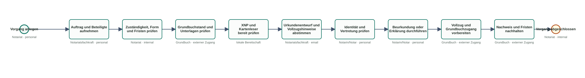

Steps
- Intake
- Land register review
- Draft
- Notarization
- Completion
BPMN view for the demo path
The flow runs from structured intake through draft and notarization to completion with land register and payment references.
This view does not replace GitHub. It makes the approved flow readable in discussion; GitHub remains the reference for the approved version, but not the presentation surface.

Steps
Duration and critical path
Scope